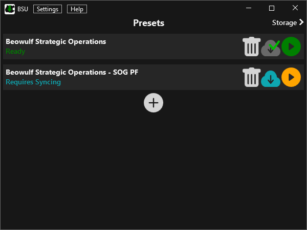

BSU
Beowulf Syncing Utility (BSU) is an open source mod syncing tool for ArmA 3. It was initially developed for the Beowulf Strategic Operations (BSO) community, born out of frustration with other available tools.
Documentation
Open Source
Find the code on GitHub